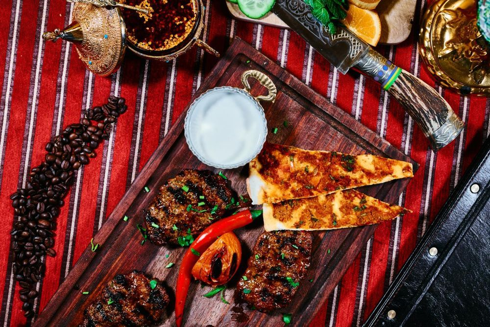

Ratgeber
Türkische Gerichte erklärt: Was ist Adana, İskender und Künefe?
Türkische Speisekarten sind voller Begriffe, die man nicht überall kennt. Hier erklären wir die wichtigsten Gerichte – und sagen, was Sie davon im Divan Ocakbaşı in Freiburg finden.

Grill und Fleischgerichte
Ocakbaşı
„Ocak“ ist die Feuerstelle, „baş“ der Platz davor: ein Ocakbaşı ist ein Grillrestaurant, in dem am offenen Grill gegart wird – und man oft direkt am Feuer sitzt.
Im Divan: offener Holzkohlegrill.
Adana Şiş
Würziges, oft scharfes Hackfleisch (traditionell vom Lamm) auf einem breiten Spieß über Holzkohle gegrillt. Benannt nach der Stadt Adana im Süden der Türkei.
Im Divan: Adana Şiş vom Holzkohlegrill.
Şiş
Das türkische Wort für Spieß: Fleischstücke (Lamm, Huhn, Pute) werden auf einen Spieß gesteckt und gegrillt.
Im Divan: Lammspieß und Putenspieß im Karışık Et Tabağı.
Köfte
Gewürzte Hackfleischbällchen oder -röllchen, gegrillt oder gebraten.
Im Divan: Peynirli Sarımsaklı Köfte (mit Schafskäse und Knoblauch gefüllt) und Pilavlı Köfte (mit Reis).
İskender
Dönerfleisch auf Brotstücken, mit Tomatensauce und Joghurt serviert – traditionell mit zerlassener Butter. Das Gericht stammt aus Bursa.
Im Divan: İskender Spezial – Dönerfleisch auf frischem Sesambrot mit Tomaten, Knoblauch-Joghurt-Soße und Tomatensoße.
Karnıyarık
„Aufgeschlitzter Bauch“: eine Aubergine wird längs eingeschnitten und mit Hackfleisch, Zwiebeln und Tomaten gefüllt.
Im Divan: ofengebackene Auberginen mit würziger Hackfleischfüllung, Tomatensoße und Butterreis.
Ali Nazik
Auberginenpüree mit Knoblauchjoghurt, darauf gebratenes Fleisch – ein Klassiker aus Südostanatolien.
Im Divan: auf dem Mittagsmenü.
Saç
Die Saç ist eine gewölbte Eisenplatte bzw. Pfanne. Saç-Gerichte werden darauf zubereitet und heiß serviert.
Im Divan: Saç-Pfanne auf der Karte, Saç Döner im Mittagsmenü.
Vorspeisen, Ofengerichte und Gebäck
Meze
Kleine Vorspeisen, die man sich in der Mitte des Tisches teilt – kalt oder warm, oft zusammen mit Rakı.
Im Divan: Karışık Meze, klein oder groß für zwei Personen.
Kiremit
Das türkische Wort für Dachziegel; Kiremit-Gerichte sind Aufläufe aus dem Steinofen.
Im Divan: Sebzeli Kiremit – Gemüseauflauf mit Kartoffeln, Auberginen, Zucchini, Blumenkohl, Paprika, Tomaten und Knoblauch.
Pide
Ein längliches Fladenbrot in Schiffchenform, belegt oder gefüllt und im Steinofen gebacken.
Im Divan: Pide, zum Beispiel Peynirli Pide mit Käse.
Lahmacun
Dünner Teigfladen mit würzigem Hackfleischbelag, oft „türkische Pizza“ genannt. Man rollt ihn gern mit Salat und Zitrone auf.
Im Divan: Pide & Lahmacun auf der Karte.
Börek & Poğaça
Börek ist gefülltes Gebäck aus dünnem Teig (etwa mit Käse, Spinat oder Fleisch). Poğaça ist ein weiches, herzhaftes Teiggebäck.
Im Divan: frisch gebackene Börek und Poğaça.
Dessert und Getränke
Künefe
Feine Teigfäden (Kadayıf) mit geschmolzenem Käse, in Sirup getränkt und mit Pistazien bestreut – am besten warm. Die Süßspeise stammt aus dem Süden der Türkei.
Im Divan: Künefe mit Pistazien.
Ayran
Ein erfrischendes Joghurtgetränk aus Joghurt, Wasser und Salz – ein klassischer Begleiter zu Gegrilltem.
Im Divan: hausgemachter Ayran.
Rakı
Ein Anisbrand, der meist mit Wasser verdünnt wird und dabei milchig weiß wird. Er wird traditionell zu Meze getrunken.
Im Divan: Rakı, Wein und Bier auf der Getränkekarte.
Tipps für den ersten Besuch
- Möchten Sie mehrere Spezialitäten probieren? Der Karışık Et Tabağı vereint Lammspieß, Lammkoteletts, Dönerfleisch, Köfte und Putenspieß – auf Wunsch als große Platte für zwei.
- Bestellen Sie Meze zum Teilen vorab, so kommt jeder zum Probieren.
- Zum Abschluss passt ein Künefe – oder ein Glas Rakı.
Die komplette Karte mit mehr als 200 Gerichten und Getränken gibt es digital in 15 Sprachen. Alle Infos zum Restaurant: Restaurant in der Freiburger Innenstadt.
Häufige Fragen
Ist türkisches Essen scharf?
Das hängt vom Gericht ab. Adana ist traditionell würzig-scharf, viele andere Gerichte sind mild gewürzt. Bei Fragen zur Schärfe sprechen Sie uns bitte an.
Welches Gericht eignet sich für den ersten Besuch?
Der Karışık Et Tabağı (gemischter Grillteller) bietet einen Querschnitt, dazu passen Meze zum Teilen.
Was bedeutet Karnıyarık?
„Aufgeschlitzter Bauch“: eine mit Hackfleisch gefüllte Aubergine.
Was ist der Unterschied zwischen Pide und Lahmacun?
Pide ist ein dickeres, belegtes Fladenbrot in Schiffchenform. Lahmacun ist ein dünner Teigfladen mit würzigem Hackfleisch.
Tisch reservieren oder nach Hause bestellen
Rufen Sie uns an – oder lassen Sie sich unsere Gerichte liefern (Liefergebiet in der jeweiligen App prüfen).